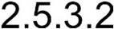
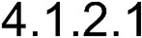

O-RAN.WG2.Non-RT-RIC-ARCH-TR-v01.01
Technical Report
O-RAN Working Group 2 Non-RT RIC: Functional Architecture
Copyright © 2021 by O-RAN ALLIANCE e.V.
By using, accessing or downloading any part of this O-RAN specification document,
including by copying,
saving, distributing,
displaying or preparing derivatives of, you agree to be and are bound to the
terms of the O-RAN Adopter License Agreement contained in the Annex ZZZ of this
specification. All other rights reserved.
O-RAN ALLIANCE e.V.
Buschkauler Weg 27, 53347 Alfter, Germany Register of
Associations, Bonn VR 11238 VAT ID DE321720189
© 2021 O-RAN ALLIANCE
e.V. All Rights Reserved
|
Date
|
Revision
|
Author
|
Description
|
|
2020.04.10
|
01.00.00
|
CMCC, Intel
|
Document skeleton
|
|
2020.05.07
|
01.00.01
|
Intel, CMCC
|
Addressed comments from email discussion
Captured agreements made
in WG2 weekly meeting on May 07th, 2020
|
|
2020.06.17
|
01.00.02
|
Intel, CMCC
|
Following three CRs are endorsed
ATT.AO-2020.05.05-WG2-CR-002-RAPPS-INTF-Non-RT-RIC-
v03.docx
INT.AO-2020.06.11-WG2-CR-0001-Non-RT RIC Functional
Architecture Diagram-v05.docx
INT.AO-2020.06.03-WG2-CR-0002-Skeleton
update-v01.docx
|
|
2020.10.29
|
01.00.03
|
Intel, CMCC
|
Following seven CRs are endorsed
SAM.AO-2020.07.23-WG2-CR-0002-Non-RT-RIC-ARCH-TR-
v02.docx
INT.AO-2020.10.01-WG2-CR-0005-A1 termination and funtions-
v03.docx
ATT.AO-2020.07.22-WG2-CR-003-R1-Intf-Reqts-v15.docx
SAM.AO-2020.10.21-WG2-CR-0003-Non-RT-RIC-ARCH-TR-
v02.docx
INT.AO-2020.10.21-WG2-CR-0008-ML
training host and model repository-v03.docx
INT.AO-2020.10.29-WG2-CR-0009-Clean up-v01.docx
NOK-2020.10.28-WG2-CR-0001-Non-RT-RIC Functional
Architecture Scope-v02.docx
|
|
2020.10.30
|
01.00.04
|
Intel, CMCC
|
Removed Annex A:
Deployment Scenarios Corrected some cross references
|
|
2020.11.02
|
01.00.05
|
CMCC, Intel
|
Following CR is endorsed
CMCC.AO-2020.10.15-WG2-CR-0003-Non-RT-RIC-ARCH-TR-
v03.docx
Editorial updates with removing the editor notes.
|
|
2020.11.16
|
01.00
|
CMCC, Intel
|
Addressed editorial updates in the following document
WG2-Non-RT RIC ARCH
TR-v01.00.05-review comments- INT_ERI_NOK_JIO.xlsx
|
|
2020.12.13
|
01.01.01
|
Intel, CMCC
|
Following CR is endorsed
IBM.AO-2020.07.15-WG2-CR-0004-Non-RT RIC Functional
Architecture Diagram-v06.docx
|
|
2021.01.28
|
01.01.02
|
Intel, CMCC
|
Following CR is endorsed
INT.AO-2020.12.16-WG2-CR-0010-Human-Machine
Interface for Training-v01.docx
|
|
2021.03.05
|
01.01.03
|
Intel, CMCC
|
Following twelve CRs are endorsed
NEC.AO-2021.02.03-O-RAN-CR-0002-
Definition of function in Non-RT RIC ARCH-v03.docx
NOK-2021.02.03-WG2-CR-0004-mapping-SBA-vs-functional-
arch-v05.docx
NOK-2020.12.07-WG2-CR-0001-Non-RT-RIC-Functional-
Architecture-SBA-v07.docx
NOK-2021.01.19-WG2-CR-0003-R1-services-v07.docx
NOK-2021.02.09-WG2-CR-0006-Integration-services-v03.docx
NOK-2021.02.03-WG2-CR-0007-non-RT-RIC-FWK-in-SB-view-
v02.docx
NEC.AO-2021.02.09-O-RAN-CR-0003- SBA-based Non-RT RIC
ARCH-v01.docx
NOK-2021.02.09-WG2-CR-0005-harmonizing-functionalities-
functions-services-v04.docx
NOK-2021.03.02-WG2-CR-0010-title-of-Section-5.4.3-v01.docx
NOK-2021.03.02-WG2-CR-0011-title-of-Section-5.4.2-v01.docx
NOK-2021.03.01-WG2-CR-0008-harmonizing-AI-ML-
functionalities-v03.docx
NOK-2021.03.02-WG2-CR-0009-Integration-services-in-the-R1-
interface-general-principles-v02.docx
|
|
2021.03.12
|
01.01
|
Intel, CMCC
|
Addressed editorial comments in the following
document
WG2-Non-RT-RIC-ARCH-TR-v01.01.03-review
comments-JIO- Intel.xlsx
|
1
1 Contents
2
Revision History.............................................................................................................................. 2
3
1 Introduction........................................................................................................................... 7
4
1.1 Scope.................................................................................................................................. 7
5
1.2 References.......................................................................................................................... 7
6
1.3 Definitions and Abbreviations............................................................................................ 8
7
1.3.1 Definitions.................................................................................................................... 8
8
1.3.2 Abbreviations............................................................................................................... 9
9
2 Overview
of Non-RT RIC................................................................................................... 9
10
2.1 Non-RT
RIC in O-RAN Overall Architecture.................................................................... 9
11
2.2 Non-RT
RIC Architecture Functional View Diagram...................................................... 13
12
2.2a Non-RT
RIC Architecture Service-based View................................................................ 14
13
2.2a.1 Non-RT
RIC Architecture Service-based View
Diagram........................................... 15
14
2.3 rApp Definition................................................................................................................ 16
15
2.4 Non-RT RIC Framework.................................................................................................. 16
16
2.4.1 Non-RT
RIC Framework in Functional View............................................................. 16
17
2.4.2 Non-RT
RIC Framework in a Service-based View..................................................... 16
18
2.5 External Interfaces........................................................................................................... 17
19
2.5.1 A1
Interface................................................................................................................ 17
20
2.5.2 External EI interface................................................................................................... 17
21
2.5.3 External AI/ML interface............................................................................................ 18
22
2.5.4 Human-Machine interface.......................................................................................... 18
23
3 Study
on Functionalities, Functions and Services......................................................... 19
24
3.1 Interface termination functions......................................................................................... 19
25
3.1.1 A1
interface termination............................................................................................. 19
26
3.1.2 External EI termination............................................................................................... 19
27
3.1.3 External AI/ML termination....................................................................................... 20
28
3.1.4 Human-Machine termination...................................................................................... 20
29
3.2 A1
Functionalities............................................................................................................ 22
30
3.2.1 A1-P functionalities.................................................................................................... 22
31
3.2.2 A1-EI
functionalities.................................................................................................. 22
32
3.2.3 A1-ML functionalities................................................................................................ 22
1
3.3 AI/ML
Functionalities...................................................................................................... 22
2
3.3.1 ML
Training............................................................................................................... 22
3
3.3.2 ML
Model Repository Functionality........................................................................... 23
4
3.3.3 AI/ML
Monitoring...................................................................................................... 24
5
3.4 R1
Services...................................................................................................................... 26
6
3.4.1 General Description.................................................................................................... 26
7
3.4.2 General Principles....................................................................................................... 27
8
3.4.3 Data
Management and Exposure Services.................................................................. 28
9
3.4.4 Integration Services.................................................................................................... 30
10
3.5 rApp Supporting Functions.............................................................................................. 30
11
3.6 Other
“Implementation Variable” Functions.................................................................... 30
12
4 Requirements...................................................................................................................... 30
13
4.1 R1
Interface Requirements............................................................................................... 30
14
4.1.1 Non-RT
RIC Framework Requirements..................................................................... 30
15
4.1.2 rApp Requirements..................................................................................................... 32
16
Annex A (Informative):
Non-RT RIC Processing Examples................................................. 34
17
A.1 Introduction
to Illustrative Example................................................................................. 34
18
A.2 R1
Processing Examples.................................................................................................. 35
19
A.2.1 R1
Data Registration Services Examples.................................................................... 35
20
Annex ZZZ: O-RAN
Adopter License Agreement.................................................................. 48
21
Section 1: DEFINITIONS................................................................................................................. 48
22
Section 2: COPYRIGHT
LICENSE................................................................................................. 48
23
Section 3: FRAND LICENSE........................................................................................................... 49
24
Section 4: TERM AND TERMINATION........................................................................................ 49
25
Section 5: CONFIDENTIALITY...................................................................................................... 50
26
Section 6: INDEMNIFICATION...................................................................................................... 50
27
Section 7: LIMITATIONS ON LIABILITY; NO WARRANTY..................................................... 50
28
Section 8: ASSIGNMENT................................................................................................................ 50
29
Section 9: THIRD-PARTY BENEFICIARY RIGHTS..................................................................... 51
30
Section 10: BINDING ON AFFILIATES......................................................................................... 51
31
Section 11: GENERAL..................................................................................................................... 51
32
1 1 Introduction
2 1.1 Scope
3
This Technical Report
has been produced by the O-RAN Alliance.
4
The contents of the present document
are subject to continuing work within O-RAN and may change following
formal
5
O-RAN approval.
Should the O-RAN Alliance
modify the contents
of the present document,
it will be re-released by O-
6
RAN with an identifying
change of release date and an increase
in version number as follows:
7
Release xx.yy.zz
8
where:
9
xx the first two-digit
value is incremented for all changes of substance, i.e. technical enhancements, corrections,
10
updates, etc. (the
initial approved document shall have xx=01).
11
yy the second two-digit
value is incremented when editorial only changes have been incorporated in the
12
document.
13
zz the third two-digit
value is included only in working versions of the document indicating incremental
14
changes during the editing process; externally published documents never have this third two-digit
value
15
included.
16
The present document provides
the technical report for the overall functional
architecture of the Non-RT RIC (RAN
17
Intelligent Controller).
This document collects concepts and requirements that are intended to be used
in the subsequent
18
specification of the Non-RT RIC architecture. It is not intended to define normative
requirements for the conformance of
19
implementations.
20 1.2 References
21
The following
documents contain provisions
which, through reference
in this text, constitute provisions of the present
22
document.
23
- References
are either specific (identified by date of publication, edition number, version
number, etc.) or
24
non-specific.
25
- For
a specific reference, subsequent revisions do not apply.
26
- For
a non-specific reference, the latest version applies. In the case of a
reference to a 3GPP document (including
27
a GSM document), a non-specific reference
implicitly refers to the latest version of that document
in the same
28
Release as the present document.
29
[1] 3GPP
TR 21.905: "Vocabulary for 3GPP Specifications".
30
[2] O-RAN-WG3.E2GAP,
“O-RAN Working Group 3, Near-Real-time RAN Intelligent Controller,
31
E2 General Aspects and Principles”.
32
[3] O-RAN-WG3.E2AP,
“O-RAN Working Group 3, Near-Real-time RAN Intelligent Controller, E2
33
Application Protocol (E2AP)”.
34
[4] O-RAN-WG1.OAM
Architecture, “O-RAN Operations and Maintenance Architecture”.
35
[5] O-RAN-WG1.O1-Interface,
“O-RAN Operations and Maintenance Interface
Specification”.
36
[6] O-RAN-WG2.A1.UseCaseRequirements,
“O-RAN Working Group 2, Use Case and
37
Requirements”.
|
1
|
[7]
|
O-RAN-WG2.A1.GA&P, “O-RAN Working
Group 2, A1 interface: General Aspects and
|
|
2
|
|
Principles”.
|
|
3
|
[8]
|
O-RAN-WG2.A1.AP, “O-RAN Working Group 2, A1
Interface: Application Protocol”.
|
|
4
|
[9]
|
O-RAN-WG2.A1.TP, “O-RAN Working Group 2, A1
Interface: Transport Protocol”.
|
|
5
|
[10]
|
O-RAN-WG1.O-RAN Architecture, “O-RAN
Working Group 1, O-RAN Architecture
|
|
6
|
|
Description”.
|
|
7
|
[11]
|
O-RAN-WG2.O-RAN Architecture, “O-RAN
Working Group 2, AI/ML Workflow description
|
|
8
|
|
and Requirements”.
|
|
9
|
[12]
|
ETSI GS ZSM 002, “Zero-touch network and
Service Management (ZSM); Reference
|
|
10
|
|
Architecture”.
|
11 1.3 Definitions and Abbreviations
12
1.3.1 Definitions
13
For the purposes of the present document, the terms and definitions given in TR 21.905 [1] and the following apply.
14
A term defined in the present
document takes precedence over the definition of the same term, if
any, in TR 21.905 [1].
15
Non-RT RIC(O-RAN non-real-time RAN Intelligent
Controller): a logical function that enables non-real-time control
16
and optimization of RAN elements
and resources, AI/ML workflow including
model training and updates, and policy-
17
based guidance of
applications/features in Near-RT RIC.
18
Near-RT RIC (O-RAN near-real-time RAN Intelligent Controller): a logical function
that enables near-real-time control
19
and optimization of RAN
elements and resources via fine-grained (e.g. UE basis, Cell basis) data
collection and actions
20
over E2 interface.
21
O-CU: O-RAN Central Unit: a logical node hosting
RRC, SDAP and PDCP protocols.
22
O-CU-CP: O-RAN Central
Unit C Control Plane: a logical node hosting the RRC and the control
plane part of the PDCP
23
protocol.
24
O-CU-UP: O-RAN Central Unit C User Plane: a logical node hosting the user plane part of the PDCP protocol and the
25
SDAP protocol.
26
O-DU: O-RAN Distributed Unit: a logical node
hosting RLC/MAC/High-PHY layers based on a lower layer functional
27
split.
28
O-RU: O-RAN Radio Unit: a logical node hosting Low-PHY
layer and RF processing based on a lower layer functional
29
split. This is similar
to 3GPP’s “TRP” or “RRH” but more specific in including the Low-PHY layer (FFT/iFFT, PRACH
30
extraction).
31
O-eNB (O-RAN eNB): an eNB or ng-eNB that supports
E2 interface.
32
O1: Interface between orchestration & management entities (Orchestration/NMS) and O-RAN managed elements, for
33
operation and
management, by which FCAPS management, Software management, File management and other similar
34
functions shall be achieved.
35
SMO: Service Management and Orchestration system.
36
A1: Interface between Non-RT RIC and Near-RT
RIC to enable policy-driven guidance of Near-RT RIC
37
applications/functions,
and support AI/ML workflow.
38
E2: Interface connecting the Near-RT RIC and one or more O-CU-CPs, one or more O-CU-UPs, and one or more O-DUs.
1
E2 Node: a logical node terminating E2 interface.
In this version of the specification, ORAN nodes terminating E2
2
interface are:
3
- for
NR access: O-CU-CP, O-CU-UP, O-DU or any combination as defined in [4];
4
- for
E-UTRA access: O-eNB.
5
rApp: An application designed
to run on the Non-RT
RIC. Such modular
application leverages the functionality exposed
6
by the Non-RT RIC to
provide added value services relative to intelligent RAN optimization and operation
7
xApp: An application designed
to run on the Near-RT
RIC. Such an application is likely to consist of one or more
8
microservices and at the point of on-boarding will identify which
data it consumes and which data it provides. The
9
application is independent of the Near-RT
RIC and may be provided
by any third party. The E2 enables
a direct association
10
between the xApp and the
RAN functionality.
11
O-Cloud: O-Cloud is a cloud computing platform
comprising a collection of physical infrastructure nodes that meet O-
12
RAN requirements to host
the relevant O-RAN functions (such as Near-RT RIC, O-CU-CP, O-CU-UP, and O-DU), the
13
supporting software
components (such as Operating System,
Virtual Machine Monitor,
Container Runtime, etc.) and the
14
appropriate management
and orchestration functions.
15
1.3.2 Abbreviations
16
For the purposes of the
present document, the following abbreviations
apply.
17
EI Enrichment Information
18
LCM Lifecycle Management
19
ML Machine Learning
20
Non-RT RIC Non-real-time
RAN Intelligent Controller
21
Near-RT RIC Near-real-time
RAN Intelligent Controller
22
RAN Radio
Access Network
23
SLA Service
Level Agreement
24
SMO Service
Management and Orchestration
25
TLS Transport
Layer Security
26
ZSM Zero-touch
network and Service Management
27 2 Overview of Non-RT RIC
28 2.1 Non-RT RIC in O-RAN Overall Architecture
29
In the O-RAN Logical
Architecture, as seen in Figure 2.1-1 below,
the Non-RT RIC is portrayed as a function
that resides
30
within the Service
Management and Orchestration Framework and which has a direct association with
the A1 interface.
31
The Non-RT RIC’s
position internal to, as opposed to interfacing with, the SMO is intended to
communicate that the
32
Non-RT RIC is comprised
of a subset of functionality of the SMO itself.
33
The direct association with the A1 interface is intended to convey that the functionality of the Non-RT RIC is directly
34
responsible for driving that which is sent and received across the A1 interface. The O1 and O2 interfaces
are shown as
35
being directly
associated with the SMO Framework itself, that which is not specific to the
Non-RT RIC. This
36
representation is intended to communicate that the SMO Framework functionality, but not the Non-RT RIC functionality
37
therein, is directly
responsible for driving that which is carried across these interfaces.
1
The representation of the Non-RT
RIC in the center (as opposed to the bordering the bottom edge)
of the SMO Framework
2
visibly indicates
that the Non-RT RIC can access SMO Framework functionality, including influencing that which is
3
carried over the O1 interface. While it is not prohibited from accessing any SMO Framework functionality, the Non-RT
4
RIC’s role of RAN resource optimization per current O-RAN definition implies
that the Non-RT
RIC would only access
5
SMO Framework
functionality for that purpose. Thus, the Non-RT RIC would influence that which
is carried across the
6
O2 interface only to the
extent that the O-Cloud is considered a RAN resource.
7
8
Figure 2.1-1: Logical Architecture of O-RAN
9
Similar to the Near-RT RIC, there is business value in visualizing the Non-RT RIC as being modularly extensible, that
10
functional extensibility being accomplished through
modular applications that can be understood as running within the
11
Non-RT RIC function itself. Such applications have different lifecycles
from the “framework” in which they run. For
12
convenience we will use
the term “rApp” to refer to such applications.
13
Because rApps
are associated with the Non-RT
RIC, any framework
services exposed to the rApps
can be considered as
14
being exposed by the
Non-RT RIC. Some of these framework services, for example access to O1, are not specific to the
15
Non-RT RIC, whereas
others, such as access to A1, are specific to the Non-RT RIC.
16
There is a clear
business benefit to allow “porting” of a Non-RT RIC application from one SMO Framework
17
implementation to another. Hence it would be useful for the O-RAN Alliance to define an open and standard
interface
18
through which the Non-RT
RIC exposes SMO Framework functionalities to “rApps” via the R1 Services exposure
19
functionality. We will
refer to this as the “R1” interface.
20
With the above
understandings, the Non-RT RIC itself can now be described as follows:
21
・ Non-RT RIC C That functionality
that drives the content
carried across the A1 interface
to the RAN. It can also
22
access other SMO Framework
functionality, for example influencing that which is carried across the O1-CM
23
interface. It is
comprised of two sub-functions:
24
o Non-RT RIC Framework C That functionality
internal to the SMO Framework itself that:
25
§ Logically
terminates the A1 interface to the Near-RT RIC.
1
§ Exposes to rApps, via its R1 interface, the set of internal SMO Framework services
needed for
2
their runtime processing.
3
o Non-RT RIC Applications (rApps) C Modular
applications that leverage the functionality
exposed by
4
the Non-RT RIC Framework
to provide added value services relative to RAN operation. Examples of
5
such added value
services include:
6
§ Driving content
(Policy or Enrichment Information) across the A1 interface.
7
§ Recommending
content for the O1 interface.
8
§ Generating
“enrichment information” for the use of other
rApps.
9
Figure 2.1-2 graphically
illustrates these definitions.
10
As observed
above, rApps will require services
from the R1 interface that are not necessarily associated with the Non-RT
11
RIC Framework, such as access
to O1, data sharing services, and access to RAN inventory. The Non-RT RIC Framework,
12
via its R1 Services
exposure functionality, would be responsible for exposing all of these services to the rApps,
13
irrespective of the
location within the SMO Framework of the provider of those services.
14
A declared business need to “port” a Non-RT RIC Framework
from one SMO Framework implementation to another
15
would drive the need for a formal interface
within the SMO Framework between
the Non-RT RIC Framework and the
16
rest of the SMO Framework. Absent this, different
implementations of SMO Framework could make different
design
17
choices as to how to
manifest the boundary between the Non-RT RIC Framework and the rest of the SMO Framework,
18
or even to choose not to implement a clear boundary at all.
19
The lack of a clear boundary
between the Non-RT RIC and the rest of the SMO Framework need not negatively impact
20
the ability
to proceed with a formal definition of the R1
interface nor impact definition of the R1 Services exposure
21
functionality needed to support this interface. Rather, such definitions can proceed, agnostic
to the source of the SMO
22
Framework services
being exposed. However,
it may be useful to define some terms that we can use to help us in
23
discussion of these topics.
24
Particularly it would be
useful to have terms to distinguish between:
25
・ An indication that a particular R1-exposed functionality is sourced from the Non-RT RIC Framework.
This
26
functionality would be
considered “inherent” to the Non-RT RIC Framework.
27
・ An indication
that it is left as an SMO Framework implementation decision whether a particular R1-exposed
28
functionality is sourced
from the Non-RT RIC Framework or not.
29
・ An indication that
a particular R1-exposed functionality is not sourced from the Non-RT RIC
Framework. This
30
functionality would be considered “inherent” to the SMO Framework
itself, but not the Non-RT
RIC Framework.
31
The functionality that is inherent
to the Non-RT RIC Framework
is that functionality related to the two interfaces that the
32
Non-RT RIC “owns”, specifically that functionality needed to drive the A1 and R1 interfaces. The O1 and O2 interfaces
33
are clear examples of
functionality of the third bullet.
34
The term “Implementation Variable
Functionality” is descriptive of that functionality described in the second bullet.
35
Examples might include functionalities such as “Data
Sharing”, “Analytic Services”, “Policy”, “RAN Inventory”,
36
“General ML/AI Model
LCM/Catalog”, RAN Mediation/Control”, “RAN Configuration Database”,
“PM Short Term
37
Data Repository”,
“Operations Intent Interface” and “External Interfaces”.
38
These terms and the
relationships between the functions they describe can be seen in Figure 2.1-2 below.
_
1
2
Figure 2.1-2: Exposure of SMO Framework Services
to rApps
3
The “Internal” arrows in
the diagram represent that it is within the scope of the Non-RT RIC Framework’s
R1 Services
4
exposure functionality to expose all required services
of the SMO Framework, even those that are not or may not be
5
associated with the Non-RT RIC Framework
itself. It is outside of O-RAN’s scope to define the “Internal”
mechanism
6
through which these
services are exposed to specific SMO Framework
implementations.
7
Note that each of the endpoint
functional blocks of the SMO Framework’s external
interfaces have interface
termination
8
functions and
functionalities associated with them to drive that respective interface. Thus,
the Non-RT RIC Framework
9
has associated with it
the “A1 Functionalities”, i.e., A1 Policy, A1 EI and A1 ML, required to drive
the A1 interface, as
10
well as the A1 interface logical
termination functions. Examples
of R1 Services exposure functionality would include
11
what is needed to manage
the runtime interactions of individual rApps
with the Non-RT
RIC Framework itself.
12
The Non-RT RIC architecture lends itself to be described by using two views, based on different
approaches: a functional
13
approach and a
service-based approach. In the functional approach, the architectural view
focuses on “packaging”
14
functionalities into functions, i.e.,
logical entities with well-defined behaviour, connected by interfaces. In a service-based
15
approach, the
architectural view focuses on describing the functionalities as capabilities
offered through services by
16
service producer
entities to service consumer entities,
inspired by the service-based design principles defined in ETSI
17
ZSM [12]. Service consumer
and service producer
entities are interconnected by means of communication support
that
18
enable adequate
communication patterns e.g. 1-1, 1-many,
pub-sub, routed etc. In general,
a functional architectural view
19
can be regarded as a deployment option, or specific
realization, allowed by the service-based architectural view, and both
20
provide the same functionalities. As described in the following, this principle is valid also for the Non-RT
RIC case.
21
Following the principles above,
Section 2.2 provides
the functional view of the Non-RT RIC architecture, whereas
Section
22
2.2a shows the service-based view. The functional
decomposition of the Non-RT RIC shown in Section 2.2 facilitates
23
analysis and description of the required
functionality of the combination of Non-RT RIC and SMO framework. Based on
24
that analysis,
the service-based view of the Non-RT RIC architecture focuses on interoperability aspects C namely the
25
interfaces with other O-RAN components and the R1 services that allow interworking between the Non-RT RIC and the
26
rApps as the main multivendor integration point. To facilitate flexibility of deployment, the service-based architectural
27
view defines SMO and Non-RT RIC capabilities, but abstracts from a detailed
representation of functional
blocks that
28
realize the capabilities and produce or consume the R1 services.
This architectural approach
allows multiple different
29
instantiations; the detailed functional
view presented in Section 2.2 being one of these possible instantiations. All such
30
instantiations will all
be interoperable towards rApps as long as they support the R1 services, and
towards other O-RAN
31
system components as
long as they support the interfaces defined towards these.
1 2.2 Non-RT RIC Architecture Functional View Diagram
2
3
Figure 2.2-1: Non-RT RIC architecture functional
view diagram
4
Figure 2.2-1 illustrates the Non-RT RIC architecture functional
view diagram. Non-RT RIC is an internal
functionality
5
of SMO framework, and the diagram
shows three categories of components of Non-RT RIC: rApps, Non-RT
RIC
6
framework, and Open APIs
for rApps.
7
・ rApp is an
application designed to run on the Non-RT RIC, and it is defined in Section 2.3.
8
・ Non-RT RIC framework is a collection of Non-RT RIC framework functions, and it is described in Section 2.4.
9
・ R1 interface
(Open APIs for rApps) are Non-RT RIC internal interface between rApps and Non-RT RIC
10
framework, and it is a collection of services, such as service
registration and discovery services, AI/ML workflow
11
services, and A1-related services.
Note that whether the function that provides
the services is in Non-RT RIC
12
framework or in SMO framework is transparent to the open APIs. R1 interface general
principles and R1 services
13
are discussed in Section 3.4.
14
Note that one Non-RT RIC
can connect to multiple Near-RT RICs.
15
A function is a logical
entity that plays the roles of services producer and/or service consumer.
16
Inside the Non-RT RIC framework, there is a set of essential Non-RT RIC framework
functions, which is illustrated as
17
the blue area in the diagram.
Because these functions
are used to support A1 interface and rApps, it is nature to deploy
18
these functions
inside Non-RT RIC framework. Such functions are denoted as “inherent Non-RT
RIC framework
19
functionality”. As the termination point of A1 interface, “A1 functions” should be regarded
as inherent Non-RT RIC
20
functions. “A1
functions” includes “A1 logical termination” and functions to support A1
services defined in [7] [8], i.e.,
21
“A1 Policy functions”,
“A1 EI functions”, and “A1 ML functions”.
22
To facilitate modular rApps, “rApp management functions”
and “R1 service exposure functions”
are required. “rApp
23
management functions”
includes rApp conflict mitigation. This example of rApp management is regarded
as inherent to
24
Non-RT RIC framework. Note that functions
for rApp orchestration are not part of rApp management functions, and
25
rApp orchestration functions can be part of SMO framework. In the diagram,
“other Non-RT RIC framework functions”
26
is used as a placeholder for any other functions inside Non-RT RIC, if identified later during the study. “R1 service
27
exposure functions”
includes “service registration and discovery function” and “authentication and authorization
1
function”, etc. The services
provided by Non-RT
RIC framework and SMO framework
are discovered by rApps via
2
“services registration and discovery function”.
An rApp needs to be authenticated and authorized by the authentication
3
and authorization
function before being able to access the required services.
4
As discussed
in the previous section, functions
can fall into the “implementation variability” area, shown as the “yellow”
5
area in the diagram. The
deployment of these “implementation variable” functions is left to
implementation. If an
6
“implementation
variable” function is deployed in the Non-RT RIC in a particular
implementation, then this function is
7
regarded as a part of
Non-RT RIC framework, and its service is discovered by rApps via “service
registration and
8
discovery function”. On the
other hand, if an “implementation variable” function is deployed in the SMO
framework in
9
one implementation, then this function
is not a part of Non-RT RIC framework, and its service
is also discovered by
10
rApps via “service
registration and discovery function”.
11
In Figure 2.2-1, three
terminations of external interfaces are demonstrated as examples of
“implementation variable”
12
functions: external
EI termination, external
AI/ML termination, and human-machine termination. External EI termination
13
is connected
to external EI sources to import enrichment information for Non-RT RIC applications. External AI/ML
14
termination is connected to external AI/ML server for ML model importation. Human-machine termination is used to
15
inject RAN intent manually.
All three terminations can reside inside Non-RT RIC or in SMO (but outside of Non-RT
16
RIC). Note that specification of these external
interfaces is for further discussion. There are many more “implementation
17
variable” functions, and examples for those “implementation variable” functions include:
AI/ML model training,
data
18
analytics, data sharing,
etc. In the diagram, “Function 1”, …, “Function n” are used as placeholders for more
19
“implementation
variable” functions.
20
The functions depicted in the architecture in Figure 2.2-1
provide the functionalities and services defined
in Section 3.
21 2.2a Non-RT RIC Architecture Service-based View
22
The service-based architectural approach is today widely adopted by telco industry.
Service-based principles allow to
23
describe an architecture not based on fixed functional components and interfaces between them but based on the definition
24
of services
as the central point of architecture consideration. Though there’s no formal definition available, a service-
25
based architecture
follows principles of which some are listed below:
26
・ Modularity:
The functionality is modularized into a set of services at the appropriate
granularity level.
27
・ Extensibility:
The architecture allows simple extensibility by adding new services and making them
28
discoverable.
29
・ Functional abstraction: Service-based architecture abstracts from the complexity and details of the underlying
30
functions that produce
the services.
31
・ Discoverability:
Services are searchable for their availability.
32
・ Composability:
Services can be composed, forming new services.
33
・ Reusability: Since services are modularized, they can be re-used and can be invoked at multiple stages of the
34
business process.
35
・ Loose coupling:
Services are loosely coupled and independent from one-another.
36
Designing an
architecture in a service-based fashion allows a great degree of deployment flexibility
and future-
37
proofedness, as it leaves the choice of components that
produce and/or consume certain services to the deployment, yet
38
facilitating multi-vendor interoperability through the definition of standardized services
respectively standardized service
39
interfaces. Services are produced
by service producers
and consumed by service consumers
through service endpoints.
40
Service-based architecture allows modularization of the services rather than the components of a deployment. Service
41
consumers need to be authenticated and
authorized to access services at runtime by policies, rather than pre-assigning
42
fixed consumer-producer relationships at the time the standard is developed. Produced
services are registered in a registry
43
from which service consumers can discover the available
services, and the technical parameters
how to consume them,
_
1
such as the service
endpoint, the data format and access protocol. For the service communication,
different possibilities
2
exist. Service consumers can access the service endpoints
directly in a point-to-point fashion, after discovering them.
3
Alternatively,
service-related communication can be facilitated using an overarching
communication framework such as
4
a message bus or service mesh. Using a service-based design for the functionalities that are consumed
and/or produced
5
by rApps, these apps can run in any deployment that offers these services,
without the need to document
implementation
6
variability. Also, future evolution
of rApps into more generic
smart network management apps is enabled,
as such evolved
7
apps would simply be
able to discover and use more services.
8
2.2a.1 Non-RT RIC Architecture Service-based
View Diagram
9
The diagram in Figure 2.2a-1 shows the decomposition of the Non-RT RIC into Non-RT RIC Framework and rApps,
10
interacting with each
other through the R1 services, described in Section 3.4.
11
A service is a set of capabilities offered
by a service producer to service consumers
for consumption through
defined
12
endpoints. The purpose of a service is to access, use and control a certain functionality (set of capabilities) available in
13
the system.
Production and consumption of services, which are specified, are roles of (software) entities
in deployments,
14
however, the exact software
entities are not called out in the specification. A service may be standardized by O-RAN
15
Alliance, by another organization, or be proprietary, but it can be made available in the system
if it implements a common
16
and standard way to
register, to be accessed and controlled.
17
According to the above, the architecture in Figure 2.2a-1 depicts the R1 services
and the related capabilities which are
18
part of the SMO and Non-RT Framework. Such capabilities also include communication support to enable adequate
19
communication patterns
for the service requirements, e.g., 1-1, 1-many, pub-sub, routed etc., inspired
by the service-
20
based design
principles defined in [12]. Furthermore, the diagram shows that the service-based approach
describes
21
consistently how
services provide access to Non-RT RIC inherent functionalities, SMO inherent functionalities,
22
implementation variable
functionalities and also capabilities external to the SMO.
23
The Non-RT RIC
service-based architectural view caters for different deployment options,
including the one illustrated
24
in Figure 2.2-1, by applying an appropriate
configuration of the authorized producers-consumer pairs.
25
26 Figure 2.2a-1: Non-RT RIC architecture service-based view
1 2.3 rApp Definition
2
rApps are modular applications that leverage the functionality exposed
by the Non-RT RIC to provide added
value
3
services relative
to intelligent RAN optimization and operation. Examples
of such added value services
include:
4
・ Providing
policy-based guidance and enrichment information across A1 interface.
5
・ Performing data analytics,
AI/ML training, and inference for RAN optimization or for the use of other rApps.
6
・ Recommending
configuration management actions over O1 interface.
7 2.4 Non-RT RIC Framework
8
2.4.1 Non-RT RIC Framework in Functional View
9
In the functional view of the Non-RT RIC architecture in Section 2.2, the Non-RT
RIC framework is a collection of Non-
10
RT RIC framework
functions. It includes the set of inherent Non-RT RIC framework functions to
support A1 interface
11
and rApps,
other Non-RT RIC framework functions
if any, and “implementation variable”
functions which are deployed
12
in Non-RT RIC. Non-RT
RIC framework functions provide services to rApps via the open APIs (also
referred to as R1
13
services, described in
Section 3.4). In summary, Non-RT RIC framework functions include
14
・ “rApp supporting
functions”, e.g, rApp service exposure functions, rApp conflict mitigation, etc.
15
o To support interoperability between Non-RT
RIC and SMO, Non-RT RIC and SMO can expose their
16
rApp-supporting functions
to each other through SMO service exposure
function, which is part of rApp
17
service exposure
functions. Non-RT RIC can leverage SMO services, for example, data collection and
18
provisioning services,
via SMO service exposure function.
19
・ “A1 functions”, e.g., A1 logical
termination, A1-Policy coordination and catalog, A1-EI coordination and
20
catalog, etc.
21
・ “AI/ML Monitoring functions”,
22
o Providing online monitoring functions to
AI/ML models in Non-RT RIC. For example, it can adopt a
23
contract-based strategy
for run-time monitoring of AI/ML models to support different types of AI/ML
24
algorithm in
multi-vendors scenarios.
25
・ “AI/ML workflow
functions”, e.g., “AI/ML Model Management Functions”, “AI/ML Data Preparation
26
Functions”, “AI/ML
Modeling/Training Functions”, “ML Model Repository”. AI/ML workflow functions
are
27
implementation variability functions and can be flexibly
deployed within Non-RT
RIC, outside Non-RT RIC
28
but within SMO, or even
outside SMO.
29
・ Other logical
terminations, e.g., external
EI termination, external
AI/ML termination, human-machine
30
termination, etc.
31
・ Other
“implementation variable” functions, e.g., data sharing.
32
2.4.2 Non-RT RIC Framework in a Service-based View
33
In the service-based view of the Non-RT RIC architecture of Section 2.2a, the Non-RT RIC framework is a collection of
34
capabilities to support well defined functionalities. It includes the set of inherent Non-RT
RIC framework functionalities
35
for the A1 interface, the support for integration services,
other Non-RT RIC framework functionalities if any, and
36
“implementation variable”
functionalities which are deployed in Non-RT RIC. Non-RT RIC framework functionalities
37
provide services
to rApps via the open APIs
(also referred to as R1 services, described in Clause 3.4). In summary,
Non-
38
RT RIC framework
functionalities include:
_
1
・ Integration
services, providing interoperability between rApps and Non-RT RIC/SMO. The
Non-RT RIC
2
Framework, the SMO, and potentially the rApps too can expose their services
through a set of capabilities in the
3
Non-RT RIC Framework
that enable rApps to register and discover service endpoints, and also to obtain
4
notifications whenever
a change in the service
availability occurs. In addition, integration services include
5
capabilities to
authenticate and authorize the service producers and the service consumers.
6
・ Data management and exposure enable the collection and production of data, as well as fetching data from a
7
database. These
functionalities cater for having different sources of heterogeneous data which
can be delivered
8
directly to a data
consumer or through a distribution system. More details are elaborated in
Section 3.4.3. Data
9
management and exposure are implementation variability functionalities and can be flexibly deployed within
10
Non-RT RIC, outside
Non-RT RIC but within SMO.
11
・ A1 interface
support, e.g., A1 logical termination, A1-Policy coordination and catalogue, A1-EI coordination
12
and catalogue, etc.
13
・ AI/ML monitoring,
providing online monitoring to AI/ML models in Non-RT RIC. For example, it can
adopt a
14
contract-based strategy
for run-time monitoring of AI/ML models to support
different types of AI/ML algorithm
15
in multi-vendors
scenarios.
16
・ AI/ML workflow
support, e.g., AI/ML model management and storage, AI/ML data preparation, AI/ML
17
modelling/training.
AI/ML workflow functionalities are implementation variability functionalities and can be
18
flexibly deployed within
Non-RT RIC, outside Non-RT RIC but within SMO, or even outside SMO.
19
・ Other logical terminations, e.g., external EI termination, external
AI/ML termination, human-machine
20
termination, etc.
21
・ Other
“implementation variable” functionalities, e.g., data sharing.
22 2.5 External Interfaces
23
2.5.1 A1 Interface
24
O-RAN-WG2.A1.GA&P
[7] specifies A1 interface general aspects and
principles.
25
O-RAN-WG2.A1.AP [8]
specifies A1 interface application protocols.
26
O-RAN-WG2.A1.TP [9]
specifies A1 interface transport protocols.
27
2.5.2 External EI interface
28 External EI interface general principles
29
The general principles
for the functionalities of an external EI interface are as follows:
30
・ Support
registration of an external source of EI.
31
・ Support transfer of
EI from an external source to Non-RT RIC that requests it.
32
・ Support transfer of handshaking messages
(e.g. EI request and response
messages) between the Non-RT RIC
33
and an external source
of EI.
34 External EI interface objectives
35
The external EI
interface functionalities facilitate the following:
36
・ Secure delivery of
EI from an external source of EI to the Non-RT
RIC.
1
・ Recognition of EI
type by the Non-RT RIC.
2
・ Transfer of EI
request messages from the Non-RT RIC to an external source of EI.
3
・ Transfer of EI
response messages from an external source of EI to the Non-RT RIC.
4
2.5.3 External AI/ML interface
5 External AI/ML interface general principles
6
The general principles
for the functionalities of an external AI/ML interface are as follows:
7
・ Support transfer
of a trained ML model (and its metadata) from an external
AI/ML server to SMO/Non-RT RIC
8
that requests it.
9
・ Support transfer
of handshaking messages
(e.g. training request
and response messages) between the SMO/Non-
10
RT RIC and an external
AI/ML server.
11
Note: Transfer of
training data to an external AI/ML server is
FFS.
12  External AI/ML interface objectives
13
The external AI/ML
interface functionalities facilitate the following:
14
・ Secure delivery
of trained ML models (and their metadata)
from an external AI/ML server
to the SMO/Non-RT
15
RIC.
16
・ Transfer of
training request messages from the SMO/Non-RT RIC to an external AI/ML server.
17
・ Transfer of
training response messages from an external AI/ML server to the SMO/Non-RT RIC.
18
2.5.4 Human-Machine interface
19
The interface
is provided by Non-RT RIC for
technicians to manually deploy
RAN intent and operate rApp .
20
As many systems provide
Human-Machine interface (e.g., web based UI), Non-RT RIC also provides such
functions to
21
technicians for their manual operations. Examples
of operations include
RAN intent injection, rApp maintenance, and
22
human
interaction/intervention for AI/ML training in the SMO/Non-RT RIC.
23
This document
doesn’t limit the implementation of the interface. The interface function
could also be integrated into other
24
interfaces to form a
unified interface.
25
Note: RAN intent may be also imported to SMO/Non-RT RIC by other ways, e.g.,
from the business
support system.
26
Note: The details of RAN
intent are FFS.
27 Human-Machine Interface general principles
28
The general principles
for the functionalities of the Human-Machine interface are as follows:
29
・ Support for RAN
intent injection.
30
・ Support for
checking an rApp information.
31
・ Support for
suspending a running rApp.
32
・ Support for
resuming a pending rApp.
1
・ Support for human
interaction/intervention for AI/ML training.
2
Note: The rApp
information may include it’s running status,
etc.
3 Human-Machine interface objectives
4
The Human-Machine
interface functionalities facilitate the following:
5
・ Transfer the RAN intent.
6
・ Provide the
information of deployed rApps on the Non-RT
RIC.
7
・ Transfer the
command of suspending a specified running rApp.
8
・ Transfer the
command of resuming a specified pending rApp.
9
・ Transfer the AI/ML
training configurations.
10
・ Transfer the AI/ML
training status requests and reports.
11
・ Transfer the
commands of initiating/suspending/resuming/terminating a training process.
12 3 Study on Functionalities, Functions and Services
13 3.1 Interface termination functions
14
3.1.1 A1 interface termination
15
The A1 interface termination enables the Non-RT RIC framework
to send and receive messages
to and from the Near-
16
RT RIC via the A1 interface. The A1 interface
termination secures the A1 interface
via TLS in A1 protocol
stack [9]. A1
17
messages sent to, and
received from, the Near-RT RIC currently include
18
・ A1 policy creation/update request
based on the policy received
from the A1-P functions (see Section 3.2.1).
19
・ A1 policy feedback,
which is routed to the A1-P functions.
20
・ A1 enrichment
information from the A1-EI functions (see Section 3.2.2).
21
・ A1 enrichment
information subscription request, which is routed to the A1-EI functions.
22
Possible future A1
messages may include
23
・ A1 machine learning
service requests/responses and subscriptions/notifications, to and from the A1-ML
24
functions (see Section 3.2.3).
25
Refer to [7, 8, 9] for
details on A1 interface specifications.
26
3.1.2 External EI termination
27
The external
EI interface termination enables the SMO/Non-RT RIC to receive and send messages via the external
EI
28
interface. These
include, e.g., handshaking messages sent between the SMO/Non-RT RIC and an
external source of EI.
29
The delivery of EI over
the external EI interface can be leveraged by rApps to enhance RAN operations. An xApp can
30
also leverage
EI that is initially delivered over the external
EI interface and then to the Near-RT
RIC over the A1 interface.
31
The external EI
interface termination secures the external EI
interface.
1
The external EI interface
termination routes all incoming messages
from an external source of EI to the SMO/Non-RT
2
RIC. The external EI interface termination may decode incoming
messages (e.g. ASN.1-encoded messages) from an
3
external source of EI.
4
The external
EI interface termination performs conversion of external data models (e.g.
5GAA standard-compliant
5
messages) from an
external source of EI to facilitate internal messaging for the SMO/Non-RT RIC.
6
Figure 3.1-1 shows the
connection between the external EI interface termination and an external source of EI via the
7
external EI
interface.
8
9 Figure 3.1-1: External EI termination
10
3.1.3
External AI/ML termination
11
The external AI/ML
interface termination enables the SMO/Non-RT RIC to receive and send messages
via the external
12
AI/ML interface. These include, e.g.,
handshaking messages sent between the SMO/Non-RT RIC and an external AI/ML
13
server.
14
The external AI/ML
interface termination secures the external AI/ML interface.
15
The external
AI/ML interface termination routes all incoming
messages from an external AI/ML server to their intended
16
destinations. For
example, it can route a trained ML model to an ML model repository.
17
The external
AI/ML interface termination may decode incoming
messages (e.g. JSON-encoded messages) from an
18
external AI/ML server.
19
The external
AI/ML interface termination performs conversion of trained ML models (e.g. ONNX standard-compliant
20
model formats)
from an external
AI/ML server to a model format that is supported by the SMO/Non-RT RIC.
21
Figure 3.1-2 shows the
connection between the external AI/ML interface termination and an external
AI/ML server via
22
the external AI/ML
interface.
23
24
Figure 3.1-2: External AI/ML termination
25
3.1.4
Human-Machine termination
26
The Human-Machine interface enhances the closed-loop mechanism of intelligent end user service
experience guarantee
27
and network performance improvement. The interface function includes RAN intent injection, rApp maintenance, and
28
AI/ML training interaction/intervention.
29
The Human-Machine
interface termination secures the Human-Machine interface.
30
The Human-Machine termination receives information of deployed rApps from rApp management function
and forwards
31
to the technician via
Human-Machine interface. The Human-Machine interface termination routes
commands of
1
suspending/resuming an rApp from a technician
(e.g., with web based UI) to rApp management function.The Human-
2
Machine interface termination may decode
incoming messages (e.g. JSON/XML/YANG-encoded messages)
from a
3
technician using the
portal, e.g. web based UI.
4
The Human-Machine
termination routes AI/ML training configurations and reporting
configurations/requests from
5
technicians to rApps and/or
the training host in the SMO/Non-RT RIC. It forwards
commands (e.g., initiating, suspending,
6
resuming, terminating, etc.) from a technician to allow human intervention of a specific
training process. The Human-
7
Machine termination receives AI/ML training
status reports from rApps and/or
the training host, and it forwards the status
8
report to technicians.
9
A technician can
configure a specific training process. The configuration message can contain:
10
・ The ID for the
AI/ML training process.
11
・ The ID for the
selected base model.
12
・ The associated App
ID (xApp or rApp).
13
・ Training location
(e.g., the internal/external training host, or within the application.).
14
・ Training/validation/testing
dataset description.
15
・ Instructions for
data pre-processing (e.g. normalization).
16
・ Configuration of
hyperparameters, etc.
17
For example,
the technician can configure the training host in the SMO/Non-RT RIC to use datasets collected from dense
18
urban area for AI/ML training, to obtain a specialized AI/ML application (or model) for metropolitan area deployment.
19
A technician can request and/or subscribe
status reporting of a specific
training process. The reporting configuration
20
message can contain:
21
・ The ID for the
AI/ML training process.
22
・ Reporting periodicity.
23
・ Reporting time period.
24
・ Reporting objects
(e.g., training progress indicator, training performance indicator, etc.).
25
・ Event-trigger
conditions.
26
・ Maximum number of
reports, etc.
27
Based on the training
status reports, a technician can send commands
to intervene the training process.
For example, a
28
technician can terminate a training process,
if the reporting shows the training is diverging or the training
of another
29
candidate App/model is completed. A technician can initiate a new training
process after hyperparameter re-configuration.
30
The Human-Machine termination converts external
messages from technicians to internal message formats used by the
31
training host and/or rApps.
External messages include
AI/ML training configuration, reporting configuration/request, and
32
human commands
on AI/ML training
operation (e.g., terminating/initiating a training process,
publishing a trained
model,
33
etc.). The Human-Machine termination converts the internal
training status reports
from the training
host and/or rApps to
34
outgoing messages to a technician.
35
Note: The exact contents
of AI/ML training configuration, status requests/reports, and commands are FFS.
36
Figure 3.1-3 shows the
connection between the Human-Machine interface termination and the technician
_
1
2 Figure 3.1-3: External Human-Machine termination
3 3.2 A1 Functionalities
4
3.2.1
A1-P functionalities
5
A1-P functionalities include:
6
・ Hosting A1 policy
and policy type repository.
7
・ Processing queries
from rApps on Near-RT RIC supported A1 policy
types.
8
・ Maintaining A1
policy enforcement status.
9
・ Notifying rApps
about an A1 policy enforcement status.
10
3.2.2 A1-EI functionalities
11
Some of the A1-EI
functionalities include:
12
・ Processing
subscription requests for EI from the Near-RT
RIC.
13
・ Routing EI to the
near-RT RIC in response to subscription requests for that EI.
14
・ Performing EI Job Control.
15
3.2.3 A1-ML functionalities
16
Potential A1-ML
functionalities may include:
17
・ Enabling an AI/ML workflow
function to register
for the A1-ML service and exchange messages
with the Near-
18
RT RIC.
19
・ Routing A1-ML
service requests/responses and subscriptions/notifications between the Near-RT
RIC and
20
registered AI/ML
workflow functions.
21
Note: A1-ML service
details are FFS.
22 3.3 AI/ML Functionalities
23
AI/ML Functionalities include Non-RT RIC Framework inherent
or implementation variability functionalities to support
24
the whole AI/ML lifecycle.
25
3.3.1 ML
Training
26
The ML training functionality allows the training
of AI/ML models
[11] of 3rd party applications (for example, rApps or
27
xApps) within
the SMO/Non-RT RIC. The inputs
consist of training
data and ML model. The training data can be
28
composed of the data collected
from Near-RT RIC and O-CU/O-DU
over O1 interface, external enrichment information
1
over external
EI interface, and registered data output from rApps over R1 interface. The input ML model is described by
2
the AI/ML model
descriptor/metadata, which can be included in an Application package. This
functionality also allows
3
the update/re-training
of ML models stored in the ML model repository
functionality.
4
Note: Details of an AI/ML model descriptor/metadata (format,
content, etc.) is FFS. Refer to Annex A.2 in [11] for
5
examples of ML model descriptors.
6
The output
is a trained, validated, and tested ML model, which is ready to be deployed within an rApp or xApp and which
7
can be stored by the SMO
or by the Non-RT RIC Framework using the ML model repository functionality.
8
The ML training in the SMO/Non-RT RIC offers offline
training. Note: using the
ML training in the SMO/Non-RT RIC
9
for online training,
e.g., to support online reinforcement learning, is FFS.
10
Note: it does not
preclude the option that a 3rd party application (for example, rApp or xApp) performs online learning
11
by itself (e.g., a
reinforcement learning application).
12
The ML training is an “implementation variable” functionality. In the functional view of the Non-RT RIC architecture, it
13
can be realized as an ML
Training host function as part of the AI/ML Workflow functions.
14
3.3.2 ML Model Repository Functionality
15
The ML Model Repository
functionality allows to store trained ML models and offers the following
services to manage
16
them:
17
・ ML model registration: A service consumer sends a trained ML model, which can be identified by a model
18
identifier (e.g.,
ModelId), and it is stored with an initial version number.
19
・ ML model update: A
service consumer updates a stored ML model. Multiple versions of a model can be stored
20
with version numbers,
e.g., for tracking purposes.
21
・ ML model retrieval:
A service consumer retrieves a ML model, providing the model identifier and the version
22
number.
23
・ ML model deletion:
A service consumer deletes a version of a stored ML model.
24
・ ML model deregistration: A service consumer
deregisters a stored ML model, i.e., all stored versions
of the
25
model are removed.
26
A service consumer can provide additional supplemental information for a ML model version
when it registers or updates
27
a ML model.
For example, supplemental information can include the
performance of the ML model, which helps
28
consumers to select the right model version to be retrieved. Details of the supplemental information (format, content, etc.)
29
is FFS. Note that a service
consumer needs SMO/Non-RT RIC’s authorization to use the services, including
30
reading/writing the
stored ML models and associated supplemental information. SMO/Non-RT RIC may
decide to only
31
partially expose
supplemental information of stored models to a service consumer.
32
Examples of service consumer
include: the ML training host in the SMO/Non-RT
RIC, ML training host in the Near-RT
33
RIC, the external AI/ML
server (over external AI/ML interface), etc.
34
Note: The interface to be used for ML model transfer
between the ML model repository
functionality and the Near-RT
35
RIC is FFS.
36
A ML model can be continuously and incrementally updated/re-trained with online information, however, there is no
37
guarantee that the updated
model always leads to better RAN performance. Therefore, a previously
stored ML model,
38
which was proved to be well-performing, can serve as a backup if the running
model evolves in the wrong direction.
1
The ML model repository
is an “implementation variable” functionality. In the functional view of the
Non-RT RIC
2
architecture, it can be
realized as an ML model repository function as part of the AI/ML Workflow
functions. Note: ML
3
model repository does
not train ML models, it stores trained models.
4
3.3.3 AI/ML Monitoring
5
AI/ML Monitoring is an essential Non-RT RIC Framework
functionality to enable
run-time monitoring of AI/ML
6
models which are deployed
in Non-RT RIC. These AI/ML models can be provided
by multi-vendors. The AI/ML
7
Monitoring as key Non-RT
RIC Framework functionality ensures these deployed AI/ML models performing normally
8
as they declared in
their agreements or contracts signed between model providers and platform operators.
9
Contract based strategy can be applied
between model providers
with application or service providers. Model providers
10
need sign contracts with the service
provider when they onboard their models to the platform
provided by the service
11
provider. The contract
schema can include following types of information:
12
・ Model Specification.
13
・ Data Specification.
14
・ Monitoring metrics.
15
・ Policies.
16
・ Feedback mechanism.
17
AI/ML monitoring is based on the
information defined contract
schema to support
different models from different
18
vendors.
19
The monitoring metrics should be defined
based on different
types of algorithms. Table 3.3-1 shows
some monitoring
20
metrics examples based
on different types of algorithms.
21
Table 3.3-1: AI/ML model monitoring metrics examples
|
Binary classification problems
|
Multiclass classification problems
|
Regression classification problems
Forecasting problems
|
|
Area under ROC
|
Accuracy
|
R squared
|
|
True positive rate (TPR)
|
Weighted True
Positive Rate (wTPR)
|
Proportion explained variance
|
|
Precision
|
Weighted False Positive
Rate (wFPR)
|
Root of mean squared error(RMSE)
|
|
F1-Measure
|
Weighted recall
|
Mean absolute error (MAE)
|
|
Logarithmic loss
|
Weighted precision
|
Mean squared error(MSE)
|
|
False positive rate (FPR)
|
Weighted F1-Measure
|
|
|
Area under PR
|
Logarithmic loss
|
|
|
Recall
|
|
|
22
1
Contracts are signed
between model providers and service
providers, which defines the key
information of the model,
2
data, monitoring
metrics, etc. A contract example is defined in JSON format below.
3 {
4 "contract": [
5 {
6
"model_spec":
{
7
"algorithm_type": "binary_classification",
8
"training_data_label": "risk"
9 },
10
"data_spec": {
11
"data_type": "numeric"
12 },
13
"monitoring_metrics": {
14
"Area_under_ROC": true,
15
"Precision": true,
16
"Logarithmic_loss": true,
17
"Recall": true
18 },
19
"policy": {
20
"policy_id": "hge7kahf84asdf44",
21
"condition": "fault",
22
"allow_action": [
23
"terminate",
24
"deploy"
25 ]
26 },
27
"feedback_mech": {
28
"feedback_data_location": "object_storage_spec",
29
"feedback_interval":
"12h"
30 },
31
"data_schema": {
32
"fields": [
33 {
34 "metadata": {
35 },
36
"name": "bandwidth",
37
"nullable": false,
38
"type": "string"
39 },
40 {
41 "metadata": {
42 },
43
"name": "throughput",
44
"nullable": false,
45
"type": "floating"
46 },
47 {
48 "metadata": {
},
"name": "delay", "nullable":
false, "type": "floating"
},
{
"metadata": {
},
"name": "jitter", "nullable":
true, "type": "floating"
}
]
}
}
]
}
|
|
1
2
3
4
5
6
7
8
9
10
11
12
13
14
15
16
17
18
19
In the functional view
of the Non-RT RIC architecture, the AI/ML Monitoring can be realized as an
AI/ML Monitoring
20
function within the
Non-RT RIC Framework.
21 3.4 R1 Services
22
The R1 interface
(depicted in Figure 3.4-1) is comprised of a collection of services, hereafter
referred to as R1 services,
23
that facilitate the
interactions between rApps and the Non-RT RIC
framework.
24
3.4.1 General Description
25
As described
earlier, the Non-RT RIC is comprised of Non-RT RIC Framework and Non-RT RIC Application (rApp)
26
functional layers
which capabilities are offered for consumption and usage through
the R1 services. Such services
include,
27
but are not limited to:
28
・ Integration services,
including service registration and discovery services,
service authentication and
29
authorization services
and communication support services.
30
・ Data management and
exposure services.
31
・ A1-related
services.
32
・ AI/ML workflow services.
33
・ O1-related services.
34
・ O2-related services.
35
NOTE: The services
listed above may be used on other O-RAN-defined interfaces as well.
1
2
Figure 3.4-1: R1 interface as a collection of services between
the Non-RT RIC Framework and rApps
3
3.4.2
General Principles
4
As described in section 5.2 of [11], at least some ML applications may profitably be deployed either
to the Non-RT RIC,
5
to the Near-RT RIC, or to both. This is certainly not true for all ML applications, as the same interfaces are not available
6
in both platforms (e.g., E2, A1 downstream) nor do each have the same real-time
requirements. However, for the types
7
of interactions needed
by the application types for which such portability would be beneficial, the
design choices of the
8
R1 interface should not
unnecessarily become an obstacle for such portability.
9
・ Leverage Existing
Work: Because rApps
will share some common functionality with xApps (startup,
messaging,
10
data sharing,
etc.), the prior work done for xApps should be analyzed for applicability to the R1 use cases and
11
leveraged where
appropriate.
12
・ Aligned integration services: Because integration or enablement services
(such as registration, discovery,
13
authorization, authentication, etc.) are needed to integrate
rApps with the Non-RT RIC as well as to integrate
14
xApps with the Near-RT
RIC, the work done for xApp integration/enablement should be analyzed for
15
applicability to rApp
integration/enablement and leveraged where appropriate.
16
・ Behavioral
Alignment Where Practical: Because at least some ML applications will be
deployable to the Non-
17
RT RIC, Near-RT RIC, or
both, the design choices made for R1 interactions should strive to minimize the
18
refactoring needed of an
rApp to enable deployment into a Near-RT RIC
environment.
19
・ Decoupled Interface:
Although rApps will share some common functionality with xApps, they will also have
20
many unique
functionalities and needs that are not applicable to the Near-RT RIC. Therefore, the analysis and
21
design choices made for the R1 interface should be done in parallel
and not considered dependent on that of
22
xApps.
23
・ The R1 interface is
the sole interface between an rApp and the functionality of the Non-RT RIC and SMO.
24
Therefore, the R1
interface should be defined to meet all functional needs of rApps, with
appropriate interface
25
extensibility
capabilities as needed.
26
The R1 interface
will provide a level of abstraction between
rApps that are consumers of data and their data sources:
1
・ The R1 interface will provide functionality such that an rApp that is a consumer
of data will not need to know
2
the data needs or data
capabilities of the producer of that data service.
3
・ The R1 interface will provide functionality such that an rApp that is a producer of data will not need to know
4
whether there exists one or multiple
consumer rApps for that data, or the nature of that consumer
(e.g., an rApp
5
versus an entity
external to the Non-RT RIC or SMO).
6
・ The R1 interface will provide functionality such that an rApp that is a consumer
of data will not need to know
7
whether the data source
is local (e.g., an rApp) or remote (e.g., an external data source such as O1).
8
・ The R1 interface
will provide functionality such that an rApp that
is a
consumer of data will not need
to know
9
whether the data was the product of a single entity (e.g., rApp), or the combined output of a complex chain of
10
entities (e.g., a chain
of rApps each consuming the value-added product of another).
11
・ The Non-RT RIC Framework will not need to understand the semantic meaning
of data or the internal
structure
12
thereof in order to
provide its R1 data registration and data subscription services.
13
For example,
the data registration and data subscription processing of the Non-RT RIC Framework should be the same
14
irrespective of whether
the Non-RT RIC Framework understands the semantic meaning and the internal
structure of the
15
data type (as perhaps
it might for standardized data types, such as O1) or not (e.g., in the case of rApp-produced data that
16
is not standardized).
17
3.4.3 Data Management and Exposure Services
18 R1 Security considerations
19 Void
20 Data Registration Services
21
This set of services is
used in the setup of data routing paths between rApps and their data sources.
22
“Data Registration”
functionality allows an rApp to communicate information about the data types
that it consumes and
23
produces to the
Non-RT RIC Framework. Data registration interactions occur when an rApp is
deployed on the Non-RT
24
RIC Framework, and can be re-initiated by either entity
thereafter as conditions change in the Non-RT RIC Framework.
25
Note that “data registration” interactions are different
than “data subscription” interactions in that “data registration”
26
involves only data types and their periodicity, whereas “data subscription” involves specific sets of data within a given
27
“scope”.1 Thus, the purpose
of “data registration” interactions is to enable the Non-RT RIC Framework to facilitate data
28
type level value-added
services, such as:
29
・ Authorizing an rApp to produce data of a certain data type. For example, a service provider
may want to enforce
30
a policy that two
separate rApp instances should not produce the same data type within the same
Non-RT RIC
31
Framework instance.
32
・ Authorizing an rApp to consume data of a certain data type. For example, a service provider
may want to restrict
33
the availability of
certain data types, such as data types that relate to sensitive data.
34
・ Accounting for the number
of rApp consumers that exist for a given data type. For example, licensing
of certain
35
data-producing rApps may
be sensitive to the number of consumer instances of that data type.
36
As part of registration
processing, the Non-RT RIC Framework will match the needs of data type
consumers against the
37
capabilities of data type producers. A valid data type producer
for matching purposes
would include previously registered
1 See “Data Subscription Services” section
for more information.
1
rApp instances that have
communicated during their own registration processing that they produce the
data type desired
2
for consumption, as well
as other data sources, such as O1. For shorthand purposes, a valid data source
that the Non-RT
3
RIC Framework is aware
of will be referred to in this document as a “known” data source.
4
Note: Whether
deployment-time data registration interactions precede or follow rApp application configuration and/or
5
activation is TBD.
6
As part of data registration interactions, the rApp will first communicate to the Non-RT RIC Framework
the data types
7
that it consumes, and
then communicate the data types that it produces. This sequence is important to
maintain, because
8
the data types that an rApp is capable of producing in some cases will depend on the availability of data types that it
9
desires to consume. The Non-RT RIC Framework will match rApp data type consumption needs against known data
10
sources. In many cases
the data type consumed will be standard RAN O1
data.
11
As part of its data registration functionality, the Non-RT
RIC Framework might also perform
some added value
12
functionality such as:
13
・ Keeping track
of the number of rApp data consumers per data type and data source (e.g.,
for licensing or
14
accounting purposes).
15
・ Ensuring that there is no more than one producer, within
a Non-RT RIC instance, of a given data type,
or if there
16
are multiple producers, verifying
at data subscription-time that the two entities
produce data corresponding to
17
different “scopes”
(e.g., geography or time).
18
The Non-RT RIC Framework
will inform the rApp if no corresponding source can be matched to an rApp’s “consumed
19
data” requirements.
20
Only the rApp itself
knows whether a data source is critical to the proper functioning of that
application. Thus, it would
21
be inappropriate for the Non-RT
RIC Framework to fail registration processing due to a lack of data source.
However, it
22
is useful to have the Non-RT RIC Framework
inform the rApp that a source cannot be found for one of its data type
23
inputs, because the lack of a data input could, as noted above, affect the data type(s) the rApp is capable of producing.
24
The rApp would determine
how to react given that the data source is unknown: continue
with the registration interactions
25
or fail the registration.
26
Note that a source of missing
data could be found later, such as when an rApp later initiates data registration interactions
27
declaring its ability to produce that data type. To handle such a case, the design of the R1 interface can avoid requiring
28
an rApp to re-declare
its desire to consume that data type by having the Non-RT RIC Framework use an anonymous
29
pub/sub paradigm to set
up a routing rule for a data consumer rApp, even though no known source of this
data currently
30
exists. With such an approach, the Non-RT RIC Framework need only inform
the previously registered rApp that the data
31
type with a previously
unknown data source now has a known data source. This interaction would inform
the rApp that
32
data subscription
requests can now be initiated for that data
type.
33
Of course, the presence
of a “new” data source may enable the previously registered rApp to produce a
data type that it
34
previously could not due to lack of critical input data. Thus, it is necessary
that an rApp be allowed
to initiate R1 data
35
registration
interactions with the Non-RT RIC Framework even after initial deployment.
36
Just as rApp data
registration can result in new data-consumption potential for rApps that have
previously registered, so
37
too can the deletion of
an rApp result in the loss of data-consumption potential for previously
registered rApps. This
38
possibility requires
that the Non-RT RIC Framework
also be able to inform
a previously registered rApp that a data type
39
with a previously known data source now has an unknown data source. Because that data source may be a critical
data
40
source for the previously
registered rApp in producing its own data type, it is necessary
that an rApp be able to initiate
41
R1 data registration interactions, even after initial
deployment, to notify
the Non-RT RIC Framework that it will no longer
42
be producing a
particular data type.
_
1 Data Subscription Services
2
This set of services
is used in the request
of specific data instances, and the fulfilment thereof by the Non-RT RIC
3
Framework. The
subscriber indicates the data type and periodicity thereof being subscribed to
(which must be a
4
previously registered
“consumed” data type) and a “scope”. A “scope” declaration specifies the filter
criteria applied to
5
the “subject”
of the data, such as a
particular set of RAN network
function instances and/or
UEs being reported
on.
6
The Non-RT RIC Framework
determines whether the requested data is already locally available, or if (as in the case of
7
RAN data) it needs to
interact with an external data source (perhaps via the SMO) to obtain that
data. The Non-RT RIC
8
Framework relieves
the data source of the burden of having to keep track of the number of data subscribers and mediating
9
multiple subscribers to
the same data stream.
10
3.4.4 Integration Services
11
The Non-RT
RIC Framework is responsible for producing a collection of Integration Services
to assist the service
12
producers and consumers,
including, but not limited to:
13
・ Authentication of
service producers and consumers.
14
・ Authorization of
service producers and consumers.
15
・ Means for service
producers to register/deregister the produced services, and to update the
information in case
16
of changes of the
service availability.
17
・ Means to notify the
changes of the service availability to subscribed consumers.
18
・ Discovery of
available services.
19
・ Information about
available communication mechanisms (aka transports).
20
The Non-RT
RIC Framework also comprises a communication support
for the service
consumers and producers
to interact
21
with each other. Nonetheless, a service producer
may incorporate its own communication mechanism, so that a producer
22
and a consumer can
interact directly via that custom transport
mechanism.
23 3.5 rApp Supporting Functions
24 Void
25 3.6 Other “Implementation Variable”
Functions
26 Void
27 4 Requirements
28 4.1 R1 Interface Requirements
29
4.1.1 Non-RT RIC Framework Requirements
30
The following
requirements pertain to the Non-RT RIC Framework functionality in support of
the R1 interface.
31
Non-RT RIC Framework Data Registration Services Requirements
32
This section
captures requirements on data registration interactions between the rApp and the Non-RT RIC Framework.
1
2
Ref: AIML requirement
REQ-Non-RT RIC-FUN7.
3
Note: For example, a particular SMO implementation may not yet support a particular O1 data type, or a particular Service
4
Provider may have
disabled a particular O1 data type. In order for an O1 data type to be
considered “known” it must be
5
available within the
context of the given SMO implementation and Service Provider environment.
6
Note that there is no expectation that data produced
by rApps is in any way standardized, nor that the Non-RT RIC
7
Framework must understand the semantic meaning or the internal structure
of the data produced by rApps in order for
8
that data type to be
considered “known”.
9
10
Ref: AIML requirement
REQ-Non-RT RIC-FUN7.
11
rApps may add to the set of data that they consume or produce, for example due to environmental changes (e.g.,
12
notification of new
produced data type availability).
13
_
to that consuming rApp informing it that a data type with a
previously unknown data source now has a known data source.
|
|
1
2
The Non-RT RIC Framework
may need to delete from the “known” data sources for a given data type, for
example due
3
to removal of a
producing rApp.
4
5
When a produced data
type’s source is rescinded, it may have ripple effects on any consuming rApps.
The Non-RT RIC
6
Framework will
communicate to the consuming rApps of a data type when its source is being rescinded.
7
8 4.1.2 rApp Requirements
9  rApp Data Registration Service Requirements
10
The following
requirements pertain to the rApp functionality in support of the R1 interface.
11
Ref: AIML requirement
REQ-Non-RT RIC-FUN6.
12
Ref: AIML requirement
REQ-Non-RT RIC-FUN7.
13
Note: If an rApp does not interrupt its data registration processing after having been informed
that no corresponding data
14
source can be found for
a “consumed” data type, it is understood that the rApp has functionality to
perform runtime
15
processing, perhaps with
reduced functionality, in the absence of that data source.
16
When a data type with a
known data source is rescinded, it may have ripple effects on any consuming
rApps. The same
17
is true when a new data source becomes
available for a data type with a previously unknown
data source. It is the
1
responsibility of each affected rApp to determine
how the lack of a data source, or the addition of a data source, impacts
2
that rApp’s processing.
3
Note: For example, any need for graceful termination of current execution
threads will be the responsibility of the rApp.
4
5
6
1 Annex A (Informative): Non-RT RIC Processing Examples
2
Because examples can be
useful in promoting understanding, this Annex provides examples to illustrate the concepts
3
described in the main
document.
4 A.1 Introduction to Illustrative Example
5
We will make use of the
following fictitious rApps in some of the subsequent sections of this Annex. In this illustration,
6
there are three separate
rApps that execute in a given Non-RT RIC Framework instance.
7
・ rApp “R” C An RF signal predictor. This rApp consumes
RAN (O1) measurements of the actual RF signal
8
experienced by a UE for its serving and neighbor cells (RFan,s) as well as other
measurements useful in
9
determining that UE’s actual location (La). This rApp’s role is to output a future time (e.g., t = 10 seconds)
10
prediction of the location
of that UE (Lpt) as well as a prediction of the RF signal that will at that location
be
11
experienced by that UE
for its serving and neighbor cells (RFpt ).
12
・ rApp “U” C A cell utilization predictor. This rApp consumes RAN (O1) cell utilization measurements regarding
13
the actual capacity
utilization for a given cell site (CUa) over time. This rApp’s role is
to trend that input so as
14
to allow it to output a
future time (e.g., t = 60 minutes) prediction of that cell site’s
utilization (CUpt).
15
・ rApp “Q” C A UE QoE
predictor. This rApp consumes measurements regarding a UE’s RF signal (either an
16
actual RAN measurement or a future time prediction) as well as a measurement of a cell site’s capacity
utilization
17
(either an actual RAN measurement or a future time prediction). This rApp’s role is to calculate the QoE
18
experienced by that UE.
Thus, this rApp can:
19
o Estimate
the actual QoE currently being experienced by a UE (Qas), by consuming measurements of
20
the actual RF signal currently experienced by that UE relative to
its serving cell (RFas) along with the
21
actual cell utilization
of that serving cell (CUa).
22
o Estimate the QoE that a UE would experience were it currently
connected instead to a neighbor
cell
23
(Qpn), by consuming
measurements of the actual RF signal currently experienced by that UE relative
24
to that neighbor cell (RFan) along with the actual cell utilization of that
neighbor cell (CUa).
25
o Estimate the QoE that will be experienced by a UE at a future time (t) assuming
that UE will remain
26
connected to its serving
cell (Qpt ), by
consuming future time (t) predicted measurements of the RF
27
signal that will be experienced by that UE relative to its serving
cell (RFpt ), along with the future
time
28
(t) predicted
cell utilization of that serving cell (CUpt).
29
o Estimate the QoE that would be experienced by a UE at that future time if that UE were to be connected
30
instead to a neighbor
cell (Qpt ), by consuming future time (t) predicted measurements of the RF signal
31
that would be
experienced by that UE relative to that neighbor cell (RFpt ), along with the future time
32
(t) predicted
cell utilization of that neighbor cell (CUpt).
33
These data source
relationships can be seen in Figure A.1-1 below. For the purposes of this
section we need not specify
34
what will be done with QoE measurements output
by rApp Q, rather leaving
it unstated for other sections
of this document
35
to build on this example. For now we merely point out that multiple options
exist, both local (e.g., another
rApp consuming
36
the QoE measurement to determine an action to take across A1 or O1) and remote (e.g., the Non-RT RIC Framework
37
forwarding the QoE
measurement to a Near-RT RIC via A1-EI for use by some xApp).
1
2
Figure A.1-1: Example rApp Data Sources
3
We will use sequence
diagrams to illustrate the interactions using this example.
In so doing, we will use the following
4
actors:
5
・ Non-RT RIC Inherent Functions: This actor will be chosen for the termination of an interaction when the
6
associated functionality
is inherent to the Non-RT RIC Framework.
7
・ SMO Inherent Functions: This actor will be chosen for the termination of an interaction when the associated
8
functionality is decidedly not part of the Non-RT RIC functional
space, i.e., neither
part of the Non-RT RIC
9
Framework nor part of an rApp.
10
・ Implementation Variable Functions: This actor will be chosen for the termination of an interaction when the
11
associated functionality
can be optionally considered part of the Non-RT RIC Framework, or not, in any given
12
implementation.
13 A.2 R1 Processing Examples
14
A.2.1 R1 Data Registration Services Examples
15
R1 “data
registration” refers to the set of functionality through which the Non-RT
RIC Framework provides
a set of data
16
mediation services
to the rApps, and the rApps provide
a set of data production services to the Non-RT RIC Framework.
17
The rApp will first communicate to the Non-RT RIC Framework
the data that it consumes,
and then communicate the
18
data that it produces.
19
20
21
22
23
24
25
26
27
28
29
30
31
32
1
2
3
4
5
6
7
8
9
10
11
12
13
14
15
16
17
18
Figure A.2-1: Data Registration Interaction Summary
19
As described earlier, the Non-RT RIC Framework
will match rApp data consumption needs against known data sources.
20
In many cases the data
consumed will be standard RAN O1 data.
21
To illustrate this, assume that rApp “R” is deployed
first into the Non-RT RIC execution
environment. This rApp would
22
initiate R1 data registration interactions to declare that it
consumes as input the RAN data types RFan,s and La.
Because
23
these are O1 data types,
the Non-RT RIC Framework would know that it must look to the SMO (inherent functionality)
24
as their data source. Thus, the Non-RT RIC Framework will reply to rApp “R” that the source for these data types is
25
known.
26
At some point after
the data registration interactions, rApp “R” would initiate
a formal “subscription” request with specific
27
“scope” information (including the specific
UEs or a class thereof
from which to collect that input). Only then
would the
28
Non-RT RIC Framework (working
with the SMO as necessary) start providing actual
data measure instances. This
29
“subscription”
interaction will be discussed in a subsequent
section.
30
As part of its continued
data registration processing, rApp “R” would declare that it produces measure Lpt, a future
time
31
prediction of the location
of a UE, as well as produce data type RFpt a future time prediction of RF signal at a UE’s
32
serving and neighbor cells.2
2 Alternately the data
type could be defined such that the neighbor and serving cell discriminators
are understood as “scope” information and left out of the registration
interaction. With this approach, the data type would be represented as RFpt, and a “scope” parameter at data subscription time would indicate the cell type, “serving” or
“neighbor”, of interest.
1
The above can be seen
represented in the sequence diagrams below.
2
@startuml
3
skinparam defaultFontSize 30
4
Autonumber
5
6
Participant NRTR as “Non-RT RIC\nInherent\nFunctions”
7
Participant rAppR as “rApp R”
8
9 Group
Data Consumer Interactions
10
11 Group
In Parallel: Consumed Data Type 1
12
13
rAppR -> NRTR: Register Data Type RFa(n,s) as Consumed.
14
NRTR -> NRTR: Determine SMO as data source for\ndata type RFa(n,s).
15
NRTR -> NRTR: Set up anonymous routing
rule for SMO\nas
producer for data type RFa(n,s).
16
NRTR -> NRTR: Set up anonymous routing rule to rApp R\nas
consumer for data type
17
RFa(n,s).
18
19 End
20
21 Group
In Parallel: Consumed Data Type 2
22
23
rAppR -> NRTR: Register Data Type La as Consumed.
24
NRTR -> NRTR: Determine SMO as data source for\ndata type La.
25
NRTR -> NRTR:
Set up anonymous routing rule for SMO\nas
producer for data type La.
26
NRTR -> NRTR: Set up anonymous routing rule to rApp R\nas
consumer for data type La.
27
28 End
29
30 End
31
32
Note over NRTR, rAppR
33
Note that all “consumed” data type interactions must complete
prior to initiating
34
“produced” data type interactions. This is because an rApp only
knows what it
35
can produce once it knows what data is available to it.
36
End Note
37
38 Group
Data Producer Interactions
39
40 Group
In Parallel: Produced Data Type 1
41
42
rAppR -> NRTR: Register Data Type Lp(t) as Produced.
43
NRTR -> NRTR: Set up anonymous routing
rule from rApp R\nas producer
for data type Lp(t).
44
45 End
46
47 Group
In Parallel: Produced Data Type 2
48
49
rAppR -> NRTR: Register Data Type RFp(t)(n,s) as Produced.
50
NRTR -> NRTR: Set up anonymous routing rule from rApp R\nas
producer for data type
51
RFp(t)(n,s).
52
53 End
54
55
Note over NRTR, rAppR
56
Note that at this time there are producer routing rules for
57
both La(t) and RFp(t)(n,s) with no corresponding consumer.
58
End Note
59
60 End
61
62 @enduml
 1
1
2
Figure A.2-2: First Illustrative Example - rApp
R Data Registration Interactions
3
The Non-RT RIC Framework
would return a registration-time warning
to the rApp if no corresponding source can be
4
matched to an rApp’s
“consumed data” requirements. The rApp would determine how to react
given that the data source
5
is unknown: continue
with the registration interactions or fail the
registration.
6
The Non-RT RIC Framework
might also perform some registration-time added value validations such as:
1
・ Keeping track
of the number of rApp data consumers per data type and data source (e.g.,
for licensing or
2
accounting purposes).
3
・ Ensuring that no other entity also produces data type RFpt , or if they do verifying
at data subscription-time that
4
the two entities produce
data corresponding to different “scopes” (e.g., geography or time).
5
We will illustrate the above considerations by extending our example, assuming
that rApp “Q” is next deployed to the
6
execution environment. This rApp would initiate R1 data registration interactions to declare
that it consumes
as input data
7
sources RFan,s, RFpt
(alternately RFpt, see footnote above), CUa and CUpt.
Because the data source of RFan,s and CUa
8
is assumed
to be standard O1, these data types would be treated as described above. The Non-RT RIC Framework
would
9
also respond that there
is a known data source (i.e., rApp “R”) for data type RFpt . However, because rApp “U” had not
10
yet been deployed and
registered, the Non-RT RIC Framework would find no source for data type CUpt.
11
Note that, as described above, rApp “Q” can produce meaningful output in the absence of CUpt input: Qan, and Qas,
12
though it cannot produce
Qpt or Qpt . Only the rApp itself
knows whether a data source
is critical to the proper
functioning
13
of that application. Thus, it would be inappropriate for the Non-RT
RIC Framework to fail registration processing due to
14
a lack of data source CUpt. However, it is useful to have the Non-RT RIC Framework
inform the rApp that a source
15
cannot be found for one of its data type inputs,
because the lack of a data input could, as in this case, affect
the data type(s)
16
the rApp is capable of producing.
Because a source of missing data could be found later, the Non-RT RIC Framework
17
would use an anonymous pub/sub paradigm to set up a routing
rule for rApp “Q” as a consumer
of data type CUpt, even
18
though no known source
of this data currently exists.
19
These interactions can
be seen in the sequence diagram below.
20
@startuml
21
skinparam defaultFontSize 30
22
Autonumber
23
24
Participant NRTR as “Non-RT RIC\nInherent\nFunctions”
25
Participant rAppQ as “rApp Q”
26
27 Group
Data Consumer Interactions
28
29 Group
In Parallel: Consumed Data Type 1
30
31
rAppQ -> NRTR: Register Data Type RFa(n,s) as Consumed.
32
NRTR -> NRTR: Determine SMO as data source for\ndata type RFa(n,s)
33
NRTR -> NRTR: Determine that there already exists a routing
rule for\nSMO as producer for
34
data type RFa(n,s).
35
NRTR -> NRTR: Set up anonymous routing rule to rApp Q\nas
consumer for data type
36
RFa(n,s).
37
38 End
39
40 Group
In Parallel: Consumed Data Type 2
41
42
rAppQ -> NRTR: Register Data Type RFP(t)(n,s) as Consumed.
43
NRTR -> NRTR: Determine rApp R as data source for data type RFp(t)(n,s).
44
NRTR -> NRTR: Determine that there already exists a routing
rule for\nrApp R as producer
45
for data type RFp(t)(n,s).
46
NRTR -> NRTR: Set up anonymous routing rule to rApp Q\nas
consumer for data type
47
RFp(t)(n,s).
48
49 End
50
51 Group
In Parallel: Consumed Data Type 3
52
53
rAppQ -> NRTR: Register Data Type CUa as Consumed.
54
NRTR -> NRTR: Determine SMO as data source for\ndata type CUa
55
NRTR -> NRTR:
Set up anonymous routing rule from SMO\nas
producer for data type CUa.
56
NRTR -> NRTR:
Set up anonymous routing rule to rApp Q\nas consumer
for data type CUa.
1
2
3
4
5
6
7
8
9
10
11
12
13
14
15
16
17
18
19
20
21
22
23
24
25
26
27
28
29
30
31
32
33
34
35
36
37
38
39
40
41
42
43
44
45
46
47
48
49
50
1
Figure A.2-3: First Illustrative Example - rApp
Q Data Registration Interactions
2
Continuing this example, if rApp “U” is later deployed to the execution environment of this Non-RT RIC Framework, it
3
would initiate
R1 data registration interactions to declare
that it consumes
as input data type CUa. Because a routing
rule
4
already exists
for the SMO as the producer of CUa, all that remains
is to set up a routing rule for rApp “U” as a consumer
5
of this data type.
6
rApp “U” would also declare that it produces
data type CUpt. The Non-RT RIC Framework
will set up the producing
7
routing rule for rApp “U” as the producer
of CUpt data type. In addition, having previously set up the anonymous
8
consuming routing rule
of CUpt data to
rApp “Q”, the Non-RT RIC Framework will notify rApp “Q” that a known data
9
source now exists. It is
up to rApp “Q” to decide how to proceed given this information.
10
The following sequence
diagram illustrates these interactions. As it is beyond the scope of this
section to go into the full
11
set of R1 interactions involved in the deployment of an rApp, the following
sequence diagram will only highlight
that
12
aspect of rApp U
deployment processing that involves the communication of its produced data type
CUpt .
13
14
15
16
17
18
19
20
21
22
23
24
25
26
27
28
29
30
31
32
33
34
35
36
37
38
39
40
41
42
43
44
45
46
47
48
49
50
51
52
53
54
55
56
57
58
1
2
3
4
5
6
7
8
9
10
11
12
13
14
15
16
17
18
19
20
21
22
23
24
25
26
27
28
29
30
31
32
33
1
2 Figure A.2-4: First Illustrative Example - rApp U Registration Interactions
1
Just as the deployment of an rApp can result
in new data-producing potential for previously deployed
rApps, the deletion
2
of an rApp can result in
the loss of data-producing potential for previously deployed rApps.
3
As an example, if rApp
“U” were next to be undeployed from the Non-RT
RIC Framework, then rApp “Q” would lose
4
its data source for data type CUpt. This would result in rApp “Q” no longer being able to produce
data types Qpt and
5
Qpt .
6
As it is beyond
the scope of this section
to go into the full set of R1 interactions involved in the undeployment of an rApp,
7
the following
sequence diagram will only highlight
that aspect of rApp “U” undeployment processing
that involves the
8
rescinding of its
produced data type CUpt.
9
10
11
12
13
14
15
16
17
18
19
20
21
22
23
24
25
26
27
28
29
30
31
32
33
34
35
36
37
38
39
40
41
42
43
44
45
46
47
48
49
50
51
52
53
54
55
56
57
58
59
60
1
2
3
4
5
6
7
8
9
10
11
12
13
14
15
16
17
18
19
20
21
22
23
24
1
2 Figure A.2-5: Second Illustrative Example - rApp Q Rescinds Produced Data
3
4
5
1 Annex ZZZ: O-RAN Adopter License
Agreement
2
BY DOWNLOADING, USING OR
OTHERWISE ACCESSING ANY O-RAN SPECIFICATION,
ADOPTER
3
AGREES TO THE TERMS OF THIS AGREEMENT.
4
This O-RAN Adopter License
Agreement (the “Agreement”) is made by and between
the O-RAN Alliance
and the
5
entity that downloads, uses or otherwise
accesses any O-RAN Specification, including its Affiliates (the “Adopter”).
6
This is a license
agreement for entities who wish to adopt any O-RAN Specification.
7 Section 1: DEFINITIONS
8
1.1 “Affiliate” means an entity that directly or indirectly controls, is controlled by, or is under common
control with
9
another entity,
so long as such control
exists. For the purpose of this Section,
“Control” means beneficial ownership of
10
fifty (50%) percent or
more of the voting stock or equity in an entity.
11
1.2 “Compliant Implementation” means any system,
device, method or operation (whether
implemented in hardware,
12
software or combinations
thereof) that fully conforms to a Final Specification.
13
1.3 “Adopter(s)” means all entities, who are not
Members, Contributors or Academic Contributors, including their
14
Affiliates, who wish to
download, use or otherwise access O-RAN Specifications.
15
1.4 “Minor Update” means an update
or revision to an O-RAN Specification published
by O-RAN Alliance
that does
16
not add any significant new features or functionality and remains interoperable with the prior version of an O-RAN
17
Specification. The term
“O-RAN Specifications” includes Minor Updates.
18
1.5 “Necessary Claims” means those claims
of all present and future patents
and patent applications, other than design
19
patents and design registrations, throughout the world,
which (i) are owned or otherwise licensable by a Member,
20
Contributor or Academic Contributor during the term of its Member,
Contributor or Academic
Contributorship; (ii)
21
such Member, Contributor
or Academic Contributor has the right to grant a license without the payment of
22
consideration to a third party; and (iii) are necessarily infringed by a Compliant Implementation (without considering
23
any Contributions not included in the Final Specification). A claim is necessarily
infringed only when it
is not possible
24
on technical (but not
commercial) grounds, taking into account normal technical practice and the
state of the art
25
generally available at the date any Final Specification was published by the O-RAN
Alliance or the date the patent
26
claim first came into existence, whichever
last occurred, to make, sell, lease, otherwise dispose of, repair,
use or operate
27
a Compliant Implementation without
infringing that claim. For the avoidance of doubt in exceptional cases where a
28
Final Specification can only be implemented by technical solutions, all of which infringe
patent claims, all such patent
29
claims shall be
considered Necessary Claims.
30
1.6 “Defensive Suspension” means for the purposes of any license
grant pursuant to Section 3, Member, Contributor,
31
Academic Contributor, Adopter, or any of their Affiliates, may have the discretion to include in their license a
term
32
allowing the licensor to suspend the license against
a licensee who brings
a patent infringement suit against the
33
licensing Member,
Contributor, Academic Contributor, Adopter, or any of their Affiliates.
34 Section 2: COPYRIGHT LICENSE
35
2.1 Subject to the terms and conditions of this Agreement, O-RAN Alliance hereby
grants to Adopter a
nonexclusive,
36
nontransferable,
irrevocable, non-sublicensable, worldwide copyright license to obtain, use and
modify O-RAN
37
Specifications, but not to further
distribute such O-RAN Specification in any modified
or unmodified way, solely
in
38
furtherance of
implementations of an O-RAN
1
Specification.
2
2.2 Adopter shall not use O-RAN
Specifications except as expressly set forth in this Agreement
or in a separate written
3
agreement with O-RAN
Alliance.
4 Section 3: FRAND LICENSE
5
3.1 Members, Contributors and Academic
Contributors and their Affiliates are prepared to grant based on a separate
6
Patent License Agreement
to each Adopter under Fair Reasonable And Non- Discriminatory (FRAND) terms and
7
conditions with or
without compensation (royalties) a nonexclusive, non-transferable, irrevocable (but subject to
8
Defensive Suspension), non-sublicensable, worldwide patent
license under their Necessary Claims
to make, have made,
9
use, import,
offer to sell, lease, sell and otherwise
distribute Compliant Implementations; provided, however, that such
10
license shall not extend:
(a) to any part or function of a product
in which a Compliant Implementation is incorporated
11
that is not itself
part of the Compliant Implementation; or (b) to any Adopter
if that Adopter is not making a reciprocal
12
grant to Members, Contributors and Academic Contributors, as set forth in Section
3.3. For the avoidance of doubt, the
13
foregoing licensing
commitment includes the distribution by the Adopter’s
distributors and the use by the Adopter’s
14
customers of such
licensed Compliant Implementations.
15
3.2 Notwithstanding the above, if any Member, Contributor or Academic Contributor, Adopter or their Affiliates has
16
reserved the right to charge
a FRAND royalty or other fee for its license
of Necessary Claims
to Adopter, then Adopter
17
is entitled
to charge a FRAND royalty
or other fee to such
Member, Contributor or Academic Contributor, Adopter and
18
its Affiliates for its
license of Necessary Claims to its licensees.
19
3.3 Adopter,
on behalf of itself
and its Affiliates, shall be prepared to grant based on a separate Patent
License
20
Agreement to each
Members, Contributors, Academic Contributors, Adopters and their Affiliates
under Fair
21
Reasonable And
Non-Discriminatory (FRAND) terms and conditions with or without compensation
(royalties) a
22
nonexclusive, non-transferable, irrevocable (but subject
to Defensive Suspension), non-sublicensable, worldwide patent
23
license under their Necessary Claims to make, have made, use, import, offer to sell, lease, sell and otherwise distribute
24
Compliant Implementations; provided, however, that such license will not extend: (a) to any part or function of a
25
product in which a Compliant Implementation is incorporated that is not itself part of the Compliant Implementation; or
26
(b) to any Members,
Contributors, Academic Contributors, Adopters
and their Affiliates that is not making
a reciprocal
27
grant to Adopter, as set forth in Section 3.1. For the avoidance of doubt, the foregoing licensing
commitment includes
28
the distribution by the Members’,
Contributors’, Academic Contributors’, Adopters’ and their Affiliates’ distributors
29
and the use by the Members’, Contributors’, Academic Contributors’, Adopters’
and their Affiliates’ customers of such
30
licensed Compliant
Implementations.
31 Section 4: TERM AND TERMINATION
32
4.1 This Agreement shall remain in force, unless
early terminated according to this Section 4.
33
4.2 O-RAN Alliance on behalf of its Members,
Contributors and Academic
Contributors may terminate
this Agreement
34
if Adopter
materially breaches this Agreement and does not cure or is not capable of curing
such breach within thirty
35
(30) days after being
given notice specifying the breach.
36
4.3 Sections 1, 3, 5 - 11 of this Agreement shall survive any termination of this Agreement. Under surviving Section
3,
37
after termination of this Agreement, Adopter will continue
to grant licenses
(a) to entities who become Adopters
after
38
the date of termination; and (b) for future versions
of O-RAN Specifications that are backwards
compatible with the
39
version that was current
as of the date of termination.
1 Section 5: CONFIDENTIALITY
2
Adopter will use the
same care and discretion to avoid disclosure, publication, and dissemination of O-RAN
3
Specifications to third parties,
as Adopter employs
with its own confidential information, but no less than reasonable
4
care. Any disclosure by Adopter to its Affiliates, contractors and consultants should be subject to an obligation of
5
confidentiality at least as restrictive as those contained in this Section.
The foregoing obligation shall not apply to any
6
information which is: (1) rightfully known by Adopter
without any limitation on use or disclosure prior
to disclosure;
7
(2) publicly
available through no fault of Adopter; (3) rightfully
received without a duty of confidentiality; (4) disclosed
8
by O-RAN Alliance or a
Member, Contributor or Academic Contributor to a third party without a duty of
9
confidentiality on such third party; (5) independently developed
by Adopter; (6) disclosed pursuant
to the order of a
10
court or other authorized governmental body, or as required
by law, provided that Adopter provides
reasonable prior
11
written notice
to O-RAN Alliance, and cooperates with O-RAN Alliance
and/or the applicable Member, Contributor or
12
Academic Contributor to have the opportunity to oppose any such order;
or (7) disclosed by Adopter
with O-RAN
13
Alliance’s prior written approval.
14 Section 6: INDEMNIFICATION
15
Adopter shall indemnify, defend,
and hold harmless the O-RAN Alliance,
its Members, Contributors or Academic
16
Contributors, and their
employees, and agents and their respective successors, heirs and assigns (the “Indemnitees”),
17
against any liability,
damage, loss, or expense (including reasonable attorneys’ fees and expenses)
incurred by or
18
imposed upon any of the
Indemnitees in connection with any claims, suits, investigations, actions,
demands or
19
judgments arising
out of Adopter’s use of the licensed
O-RAN Specifications or Adopter’s commercialization of
20
products that comply
with O-RAN Specifications.
21 Section 7: LIMITATIONS ON LIABILITY; NO WARRANTY
22
EXCEPT FOR BREACH OF
CONFIDENTIALITY, ADOPTER’S BREACH OF SECTION 3, AND ADOPTER’S
23
INDEMNIFICATION
OBLIGATIONS, IN NO EVENT SHALL ANY PARTY BE LIABLE TO ANY OTHER
24
PARTY OR THIRD PARTY FOR ANY INDIRECT, SPECIAL,
INCIDENTAL, PUNITIVE OR CONSEQUENTIAL
25
DAMAGES RESULTING
FROM ITS PERFORMANCE OR NON-PERFORMANCE UNDER THIS AGREEMENT,
26
IN EACH CASE WHETHER
UNDER CONTRACT, TORT, WARRANTY, OR OTHERWISE, AND WHETHER OR
27
NOT SUCH PARTY HAD
ADVANCE NOTICE OF THE POSSIBILITY OF SUCH DAMAGES. O-RAN
28
SPECIFICATIONS ARE
PROVIDED “AS IS” WITH NO WARRANTIES OR CONDITIONS
WHATSOEVER,
29
WHETHER EXPRESS,
IMPLIED, STATUTORY, OR OTHERWISE. THE O-RAN ALLIANCE AND THE
30
MEMBERS, CONTRIBUTORS OR ACADEMIC CONTRIBUTORS EXPRESSLY DISCLAIM ANY WARRANTY
31
OR CONDITION OF
MERCHANTABILITY, SECURITY, SATISFACTORY QUALITY, NONINFRINGEMENT,
32
FITNESS FOR ANY
PARTICULAR PURPOSE, ERROR-FREE OPERATION, OR ANY WARRANTY OR
33
CONDITION FOR O-RAN SPECIFICATIONS.
34 Section 8: ASSIGNMENT
35
Adopter may not assign
the Agreement or any of its rights or obligations under this Agreement
or make any grants or
36
other sublicenses to this Agreement, except as expressly
authorized hereunder, without
having first received the prior,
37
written consent
of the O-RAN Alliance, which consent may be withheld
in O-RAN Alliance’s sole discretion. O-RAN
38
Alliance may freely
assign this Agreement.
1 Section 9: THIRD-PARTY BENEFICIARY
RIGHTS
2
Adopter acknowledges and agrees that Members, Contributors and Academic Contributors (including future Members,
3
Contributors and Academic Contributors) are entitled to rights as a third-party beneficiary under this Agreement,
4
including as licensees
under Section 3.
5 Section 10: BINDING ON AFFILIATES
6
Execution of this Agreement by Adopter in its capacity
as a legal entity or association constitutes that legal entity’s
or
7
association’s agreement that its Affiliates are likewise bound
to the obligations that are applicable to Adopter hereunder
8
and are also entitled to
the benefits of the rights of Adopter hereunder.
9 Section 11: GENERAL
10
This Agreement is governed by the laws of Germany without regard to its conflict or choice of law provisions.
11
This Agreement constitutes the entire
agreement between the parties as to its express subject
matter and expressly
12
supersedes and replaces any prior or contemporaneous agreements between the parties,
whether written or oral, relating
13
to the subject matter of
this Agreement.
14
Adopter, on behalf of
itself and its Affiliates, agrees to comply at all times with all applicable
laws, rules and
15
regulations with respect to its and its Affiliates’ performance under this Agreement, including without limitation, export
16
control and antitrust laws. Without limiting
the generality of the foregoing, Adopter acknowledges that this Agreement
17
prohibits any
communication that would violate the antitrust
laws.
18
By execution
hereof, no form of any partnership, joint venture or other special
relationship is created between Adopter,
19
or O-RAN Alliance or its
Members, Contributors or Academic Contributors. Except as expressly set forth
in this
20
Agreement, no party
is authorized to make any commitment on behalf of Adopter, or O-RAN Alliance
or its Members,
21
Contributors or Academic Contributors.
22
In the event
that any provision of this Agreement conflicts with
governing law or if any provision is held to be null,
23
void or otherwise ineffective or invalid by a court of
competent jurisdiction, (i) such provisions will be deemed stricken
24
from the contract, and (ii) the remaining terms, provisions, covenants and restrictions of this Agreement
will remain in
25
full force and effect.
26
Any failure
by a party or third party beneficiary to insist upon or enforce
performance by another
party of any of the
27
provisions of this Agreement or to exercise
any rights or remedies under this Agreement or otherwise by law shall not
28
be construed as a waiver
or relinquishment to any extent
of the other parties’ or third party
beneficiary’s right to assert
29
or rely upon any such provision, right or remedy
in that or any other instance; rather the same shall be and remain
in full
30
force and effect.